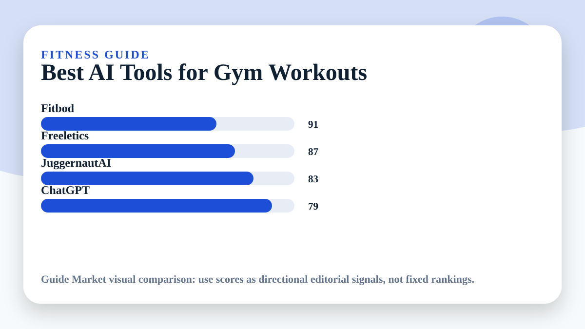

Best AI Tools for Gym Workouts
Updated May 11, 2026. Prices and plans change often; always confirm on the official website before paying.
Workout AI should not be judged by how intense the plan looks. It should be judged by progression, recovery, exercise substitutions, and whether a real person can follow it for months. A flashy seven-day split is easy to generate; a sustainable plan is harder.

Editorial verdict
My pick: Fitbod for most gym users, JuggernautAI for serious strength training, and ChatGPT only as a planning helper. I would not use a general chatbot as my only coach if injuries, pain, or heavy lifting are involved.
Quick picks
- Best for beginners: Fitbod
- Best bodyweight option: Freeletics
- Best for powerlifting-style strength: JuggernautAI
- Best free planning helper: ChatGPT
Price and feature snapshot
| Tool | Price snapshot | Pros | Cons |
|---|---|---|---|
| Fitbod Official site | Subscription app; pricing varies by platform and region | Adaptive gym routines and exercise substitutions | Can overcomplicate plans if you do not log honestly |
| Freeletics Official site | Free app with paid Coach subscription options | Bodyweight training and habit building | Less ideal for detailed barbell progression |
| JuggernautAI Official site | Paid strength coaching app; check official pricing | Powerlifting, strength blocks, fatigue feedback | Too specialized for casual gym users |
| ChatGPT Official site | Free plan available; paid plans listed by OpenAI | Meal ideas, routine explanation, exercise alternatives | No sensor-based progress tracking by itself |
What matters more than AI
The best workout plan still depends on sleep, nutrition, consistency, and honest effort. AI can organize your training, but it cannot know your form quality unless you provide video, coaching feedback, or clear notes. If a movement hurts, stop and get qualified advice.
Hypertrophy vs fat loss
For hypertrophy, choose tools that track volume, muscle groups, and progressive overload. Fitbod is strong here because it adapts exercises based on equipment and recent training. For fat loss, the workout app matters less than calories, protein, steps, and adherence. ChatGPT can help build meal ideas, but it should not replace a medical professional.
Editorial recommendation
If I had to choose one app for a normal gym user, I would choose Fitbod. It is practical, adaptive, and less intimidating than strength-specialist platforms. If your main goal is squat, bench, and deadlift progress, JuggernautAI is more focused.
Best use cases
- Beginner 3-day full-body gym plan
- Home workout with no equipment
- Hypertrophy split with exercise substitutions
- Strength block where fatigue feedback matters